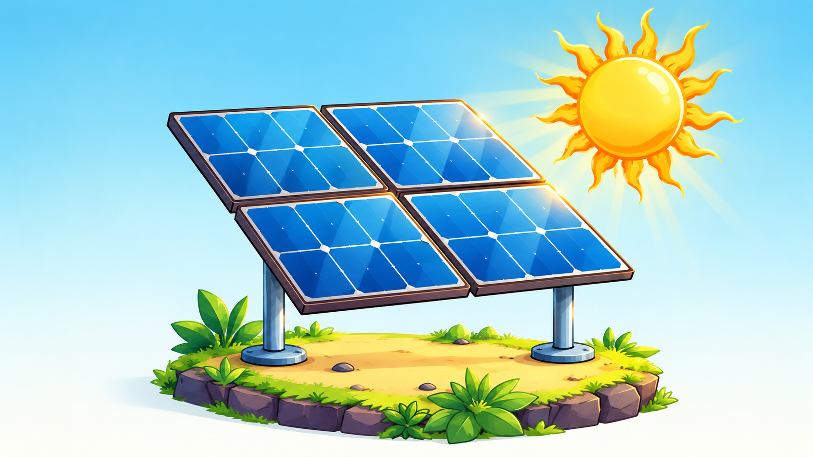
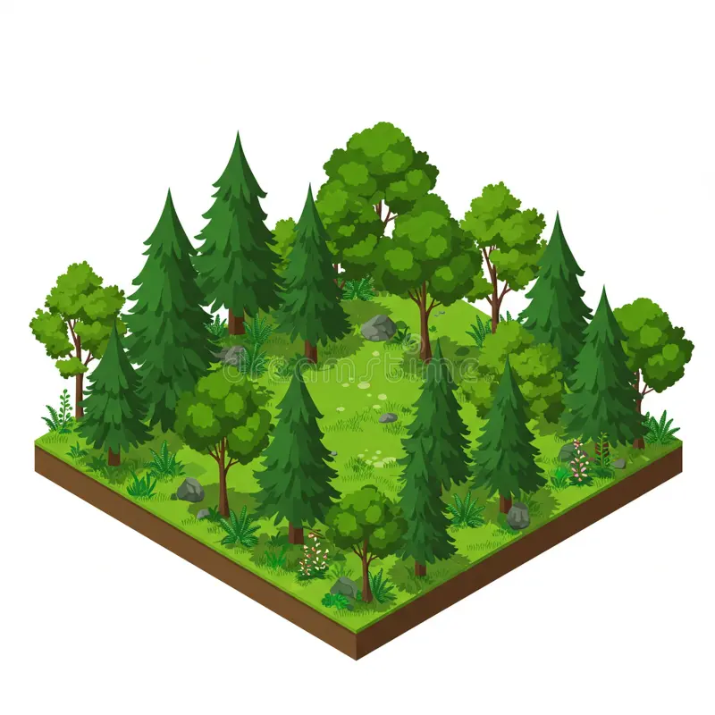

BUILD
BETTER.
LIVE
GREENER.
Eco-friendly technology is about designing smarter systems that use less, waste less and give more back to the planet.


TECHNOLOGIES
SIX TECHNOLOGIES REWIRING THE ECONOMY.
Select a technology to see how it works, what it offers and the challenges still to solve.

TECHNOLOGY SHOULD NOT FIGHT NATURE.
Sustainable technology is more than replacing one machine with another. It means redesigning the whole system: how energy is generated, how products are made, how cities move and what happens when things reach the end of their life.
The future is not technology versus nature. It is technology designed around nature.
THE FUTURE IS MEASURED BY WHAT WE LEAVE BEHIND.
SOURCES: IRENA, IEA, UNEP, UN GLOBAL E-WASTE MONITOR 2024. FIGURES ROUNDED.
COMMON QUESTIONS.
Is renewable energy reliable?
Individual sources vary with weather, but grids combine solar, wind, storage, demand management and long-distance transmission to keep supply stable. Diversity and storage are what make a high renewable share dependable.
Are electric vehicles really cleaner?
Over their lifetime, EVs typically produce fewer emissions than combustion cars, even after accounting for battery manufacturing. The advantage grows as the electricity grid gets cleaner.
What is a circular economy?
A system where products are designed to last, be repaired, reused and remanufactured, and where materials are recovered at end of life instead of discarded.
What can individuals do?
Choose efficient appliances and LED lighting, use public or electric transport, repair rather than replace, recycle electronics responsibly, and where possible switch to a renewable electricity supply.
MAKE THE FUTURE
WORTH LIVING.
Sustainable technology is a collection of ideas, systems and choices that move society toward a cleaner relationship with the planet.
START EXPLORING ↗